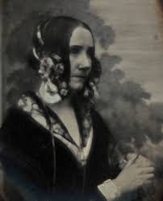

Ada Lovelace
A primeira programadora do mundo

A matemática, escritora e condessa, Augusta Ada Byron King — mais conhecida como Ada Lovelace — é a primeira programadora do mundo.
Ela é responsável pelo primeiro algoritmo que foi usado por uma calculadora chamada de Máquina Analítica, o mais próximo do que seria um computador no começo do século XIX.
Relação de Ada Lovelace com a tecnologia
-
Seu envolvimento com tecnologia e programação começou cedo. Quando tinha 17 anos conheceu a senhora Mary Somerville, tradutora das obras do matemático e físico francês, Pierre-Simon Laplace, ou Marquês de Laplace. Somerville tinha contatos com grandes inventores e cientistas da época e estimulou que Ada estudasse matemática e tecnologia. Com o tempo se tornaram amigas.
-
Em 1834, quando Ada tinha ainda 19 anos, foi convidada para um jantar na casa de Somerville, onde encontrou Charles Babbage, que estava trabalhando em uma nova espécie de máquina de cálculo. Mais tarde, a calculadora de Babbage foi batizada de Máquina Analítica.
-
Em 1843, aos 28 anos, casada com o conde de Lovelace e mãe de três filhos, Ada traduziu um artigo de um pesquisador italiano, Menabrea. O artigo era um resumo do funcionamento da máquina analítica de Babbage.
-
Ao mostrar a tradução para o próprio idealista da máquina, Babbage sugere que Ada adicione suas notas pessoais, o que resultou em um artigo três vezes maior do que o original. Nos comentários, Ada sugere que a máquina poderia ser usada para produzir músicas complexas, gráficos precisos e ser utilizada tanto para desenvolvimento prático como científico.
Saiba mais sobre a rica historia de Ada Lovelace.